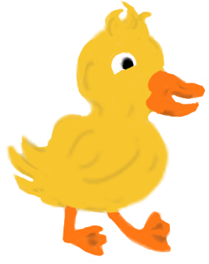

Había una vez en el bosque 4 huevos a punto de nacer, eran los huevos empollados por la mamá Pata
Los huevitos empezaron a moverse, estaban a punto de nacer
Los huevos empezaron a romperse y uno a uno salían del cascarón. Al huevo más grande le tomó más tiempo romperlo, pero al
final logró salir.
Para sorpresa de todos el patito era muy distinto a los demás y debido a sus diferencias empezaron a llamarlo Patito feo.

La mamá Pata muy avergonzada de haber tenido un patito tan feo, alejó con su ala al pequeño, poniendo mayor atención al
resto de patitos

Patito feo se sintió muy triste y solo, no entendía por que su madre y sus hermanos no lo querían, se acercó a la orilla
del lago y en su reflejo miraba un patito muy feo, entonces empezó a llorar.
El Patito Feo caminaba muy triste alrededor del lago de repente una ave pasó volando con un gusano en la boca, el patito
feo miró que aquella ave está llevando comida a sus hijitos a un nido en la montaña.
El patito feo se acercó al nido de los pájaros para ver si había alguien como él.
Pero al ver su hogar irrumpido, los pájaros lo echaron y el patito feo tuvo que irse de allí.
El patito feo lloraba su desgracia, y su llanto fue escuchado por una mamá cisne y sus hijos, quienes se acercaron a ver
qué le pasaba.
El patito feo se dió cuenta de que era igual a los cisnes, y ellos lo acogieron en su familia. Juntos se fueron nadando
por el río.